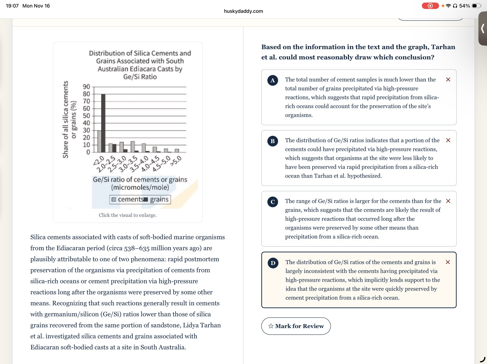

Silica cements: does the graph support the explanation?
Read the passage and graph in the picture, then choose the conclusion best supported by both.

Open full-size question pictureThe picture includes the original answer choices and interface markings. Use the reasoning below to evaluate the answer.
Step-by-step explanation & answer
1. Understand the passage in easy English
The question scientists want to answer: How did the impressions of ancient soft-bodied sea creatures become preserved in rock?
First, separate the two materials. Grains are the small particles in sandstone. Silica cement is a mineral material that holds grains together, like glue. Here, “cement” does not mean the building material used for sidewalks.
The passage, shortened:
Scientists have two possible explanations for the silica cement around these fossils. It may have formed quickly from ocean water rich in silica, helping preserve the creatures soon after they died. Or it may have formed much later under high pressure, after something else had already preserved the creatures. High-pressure reactions usually produce cement with a lower Ge/Si ratio than the surrounding grains. Tarhan’s team compared the cement and grains to check this.
| Explanation | When did the cement form? | What preserved the creatures? |
|---|---|---|
| Quick formation from ocean water | Soon after the creatures died. | The quickly forming silica cement helped preserve them. |
| Later formation under high pressure | Long after the creatures had already been preserved. | Some other process preserved them first; the cement came later. |
The key sentence is the comparison: high-pressure reactions generally produce lower Ge/Si ratios in the cement than in the grains. Ge/Si means the amount of germanium compared with the amount of silicon. You do not need outside chemistry knowledge; you only need to track which material should have the lower ratio.
Prediction to test: If high pressure formed the cement, the cement should generally have lower ratios than the grains.
2. Connect the chart to that prediction
Read the chart in this order:
- Legend: light bars represent cements; dark bars represent grains.
- Horizontal axis: Ge/Si ratio groups. Farther left means a lower ratio; farther right means a higher ratio. This axis does not show pressure or time.
- Vertical axis: the percentage of each material in a ratio group. It does not show the total number of samples collected.
| Material | Approximate share below 2.0 | What to notice |
|---|---|---|
| Grains — dark bars | 80% | Most grains are concentrated in the lowest ratio group. |
| Cements — light bars | 30% | A much smaller share is in the lowest group. Most cements fall in higher ratio groups. |
So what is the overall pattern? Compared with the grains, the cements are more spread toward the higher-ratio side of the chart. This does not mean that every cement sample has a higher ratio than every grain sample. It describes the overall distributions.
The passage predicts: high-pressure cement should generally have lower ratios than the grains.
The chart shows: the cements tend toward higher ratios instead.
The connection: the observed pattern does not fit the high-pressure explanation. That weakens the idea that the cement formed much later under high pressure. Of the two explanations in the passage, quick formation from silica-rich ocean water is therefore better supported.
Notice the limit: the chart does not directly measure how quickly the cement formed. It supports the quick-formation explanation indirectly, by giving evidence against the competing explanation.
3. Analyse all four options, then choose the answer
A. “There are far fewer cement samples than grains, so quick ocean formation could explain preservation.”
Problem: it turns percentages into sample counts. The 30% and 80% bars describe how each material is distributed; they do not tell us how many cement or grain samples the scientists collected. A smaller percentage does not necessarily mean a smaller number of samples. The choice also describes the grains as having formed through high-pressure reactions, which the passage and graph do not establish.
The final idea may sound plausible, but the evidence used to reach it is unsupported. Reject this option.
B. “Some cement could have formed under high pressure, so quick ocean preservation is less likely.”
Problem: its conclusion goes against the overall comparison. Some cements have low ratios, but a low ratio by itself does not identify the process that formed a sample. The passage asks us to compare cement ratios with grain ratios, not simply look for any cement in a low-ratio group.
Even if some cement could have formed under high pressure, that possibility alone would not show that quick ocean preservation was less likely overall. The chart’s main pattern weakens high-pressure formation rather than strengthening it. Reject this option.
C. “Cement has a wider range of ratios, so it probably formed much later under high pressure.”
Problem: a correct observation leads to an unsupported explanation. The light cement bars do extend across more ratio groups. But the passage does not say that a wider range indicates high pressure. It says high pressure generally produces lower cement ratios than grain ratios.
A wider range cannot, by itself, tell us that high pressure caused the cement or that it formed long after preservation. Reject this option.
D. “The distributions do not fit high-pressure formation, which indirectly supports quick preservation by cement from ocean water.”
This option connects the correct comparison to the correct conclusion. High pressure predicts lower cement ratios, while the chart shows the cement distribution shifted toward higher ratios relative to the grains. That is evidence against the later, high-pressure explanation.
Its phrase “implicitly lends support” is appropriately cautious: evidence against the second explanation supports the first explanation without proving it.
Answer: D. The cement-to-grain ratio pattern does not match what high-pressure formation predicts. This indirectly supports quick cement formation from silica-rich ocean water as the preservation process.
4. Strategies for passage-and-chart questions
- Find the scientific question. Here: did the cement help preserve the creatures quickly, or did it form much later?
- Turn the key sentence into a prediction. Write it in a few words: “High pressure predicts lower cement ratios than grain ratios.” Pay close attention to words such as lower than, higher than, and generally.
- Check the legend, both axes, and the units. Identify what each bar represents and whether the values are counts, percentages, or measurements. Never turn percentages into total sample numbers without knowing the sample sizes.
- Compare the chart with the prediction. Ask whether the overall pattern fits. Here, the cement distribution tends higher, so it does not fit the high-pressure prediction. Exact averages are unnecessary.
- Test both halves of each option. Ask: “Is its observation supported?” and “Does its conclusion actually follow?” A true observation followed by an unsupported conclusion is still wrong, as in C.
- Choose the strength of claim the evidence allows. “Supports” or “weakens” may be justified when “proves” is not. Do not replace a general pattern with an absolute claim about every sample.
Reusable method: What does the explanation predict? What does the chart show? Does the pattern support or weaken that explanation?